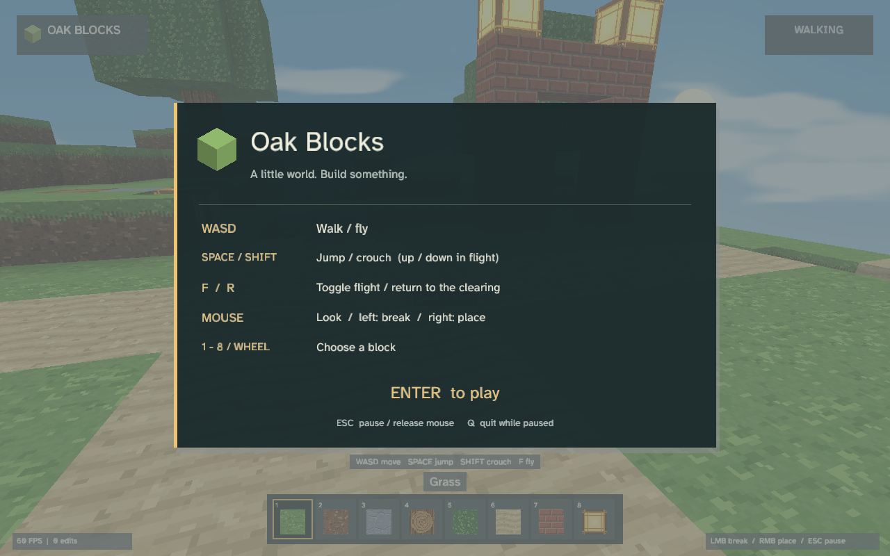

A programming language of your own
Small scripts.
Full worlds.
Meet OakScript: a general-purpose language with typed values, modules, and built-in graphics, audio, and GPU compute.
Version 0.7.0 · Windows x64 · Self-contained runner
\ A first Oak program
def __main__():(
print("Hello from OakScript!")
for value in range(1, 6):(
print(value ** 2)
)
)Hello from OakScript!
1
4
9
16
25
Start with the essentials.
Functions, collections, imports, recoverable errors, generators, and runtime code evaluation.
Give your code a canvas.
Draw pixels, polygons, text, and 3D scenes. Handle input, play sound, and dispatch compute work.
Compile supported programs.
Generate native machine code with MinGW-w64 GCC. Native coverage is still expanding; see supported features.
FROM DOWNLOAD TO FIRST SCRIPT
Run something simple.
Extract the download
The ZIP includes the runner, reference, examples, and licenses. Console programs need no .NET or Python installation.
Save a file as
.oakUse any text editor. Start with hello.oak, or write your own program.
Run it in your terminal
.\oakscript.exe hello.oakAdd the runner's folder to PATH to use
oakscriptanywhere.
The runner's graphics require a Vulkan-capable GPU driver. Native graphics currently use OpenGL. Native compilation requires MinGW-w64 GCC; the resulting EXE does not require OakScript or .NET.
A FEEL FOR OAK
Read it. Run it. Change it.
def __main__():(
print("Hello from OakScript!")
for value in range(1, 6):(
print(value ** 2)
)
)Parentheses delimit a block. range(1, 6) excludes 6. ** is exponentiation; ^ is XOR.
window "My first canvas" 800 600
def draw():(
clear((17, 28, 25))
fill_poly([(100, 100), (400, 100), (250, 350)], (164, 224, 125))
set_pixel(450, 250, (255, 255, 255))
if key_pressed("Escape"):(close_window())
)Draw directly from Oak and query keyboard input. use_render(True) enables manual buffering with render_screen().
\ main.oak
from "lib/greeting.oak" import greet
print(greet("Oak"))Run main.oak with lib/greeting.oak beside it in a lib folder. Import by library name, relative path, or absolute path. Select several exports with first;second, or all exports with *.

ACTUAL OAKSCRIPT OUTPUTLEARN FROM A WORKING PROGRAM
A little world.
Built in Oak.
Oak Blocks is a small 3D sandbox made with Oak libraries. Walk, jump, fly, crouch, and place textured blocks with lighting and fog.
The example ZIP includes its Oak files, libraries, assets, and runner. Open the source and see how it works.
Download Oak Blocks ↓KEEP EXPLORING